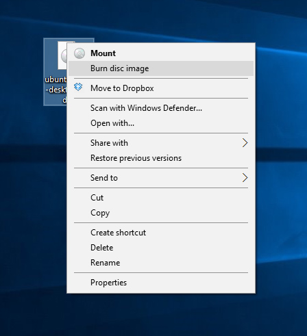
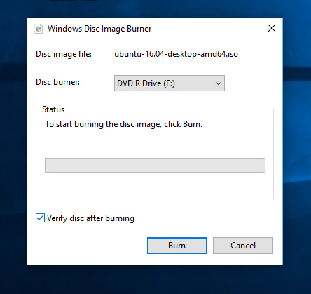
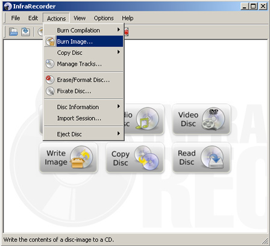

Создание Lubuntu Linux Live CD в Windows
LiveUSB(LiveСD) - это операционная система записанная на CD/DVD диск или на USB флешку. Такая ОС умеет очень быстро запускаться и развертываться без установки на жесткий диск. Загрузившись с LiveUSB вы получите ЧИСТУЮ, безопасную операционную систему для работы с криптовалютными кошельками. Настоятельно рекомендуем при манипуляциях с закрытыми ключами Ваших кошельков использовать такую ОС.
Изменения в ПО ОС между запусками LiveUSB(LiveСD) не сохраняются, т.е. Вы каждый раз загружаетесь в чистую ОС, без вирусов, троянов, бэкдоров и прочих инструментов злоумышленников.
С помощью загрузочного Lubuntu Linux Live USB(CD) вы сможете:
- Установить или обновить Lubuntu,
- Проверить работоспособность рабочего стола Lubuntu, не касаясь конфигурации вашего ПК,
- Загрузится в Lubuntu на своем компьютере или с любого другого ПК в интернет кафе для безопасной работы,
- Восстановить или исправить конфигурацию ОС используя инструменты, установленные по умолчанию на Lubuntu Linux Live USB(CD).
Для создания LiveUSB мы выбрали ОС Lubuntu, вариант Ubuntu, развивающий более лёгкое, менее ресурсоёмкое, а также энергоэффективное окружение, регулярно обновляется и не требовательна к ресурсам ПК.
Для создания загрузочного Lubuntu Linux Live CD в ОС Windows нам понадобиться:
- чистый DVD,
- образ операционной системы - (файл с расширением iso), который нужно скачать отсюда. Я для себя выбрал дистрибутив - lubuntu-18.04.1-desktop-i386.iso.
После того как вы загрузили ISO-файл для создания Lubuntu Live USB(CD/DVD) , рекомендуется проверить, что файл является правильным и безопасным для использования.
Создание Lubuntu Linux Live CD в Windows 7,8,10
Создание Lubuntu Linux Live CD в Windows 95 / 98 / ME / 2000 / XP / Server 2003 / Vista
Создание Lubuntu Linux Live CD в Windows 7,8,10.
Нажмите правой кнопкой мыши на iso файл который вы только что скачали и в меню выберите "Burn disc image".
.
Выберите диск в который установлен чистый DVD и нажмите "Burn", в случае установки флажка "Verify disc after burning" после записи диск будет проверен на наличие ошибок.
.
Создание Lubuntu Linux Live CD в Windows 95 / 98 / ME / 2000 / XP / Server 2003 / Vista
Скачайте и установите Infra Recorder, бесплатная программа с открытым исходным кодом.
Вставьте чистый DVD в привод. Если появится меню автозапуска DVD нажмите "Отмена".
Откройте Infra Recorder, в верхнем меню нажмите "Actions", затем "Burn image".
.
Выберите iso файл с дистрибутивом Lubuntu Linux Live CD который вы скачали и нажмите ‘Open'.
В диалоговом окне нажмите ‘OK'. Дождитесь окончания процесса записи.
Поздравляем! Теперь у вас есть готовый к работе Lubuntu Linux Live CD, загрузочный CD диск с быстрой и безопасной ОС.
После записи нашей безопасной ОС рекомендуется проверить ее на отсутствие ошибок записи, это можно сделать при запуске Lubuntu Linux Live USB(CD).
Защитите вашу конфиденциальность при использовании криптовалют.
Защитите Ваши интернет платежи с помощью Linux Live CD(USB).
Создание Lubuntu Linux Live CD в Windows.
Создание Lubuntu Linux Live USB в Windows.
Проверка целостности дистрибутива Lubuntu Linux Live USB(CD/DVD) в Windows.
Проверка целостности дистрибутива Lubuntu Linux Live USB(CD/DVD) после записи на USB(CD/DVD).
|
|

Home Nagrania Projects |


|